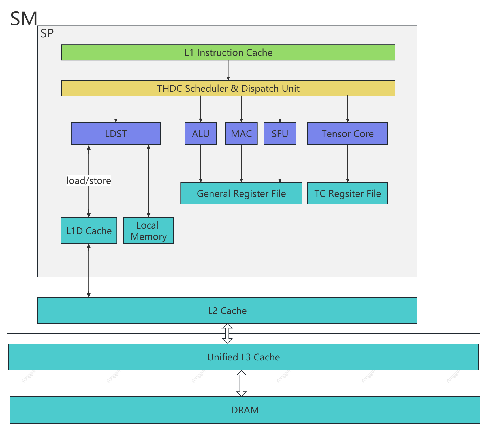
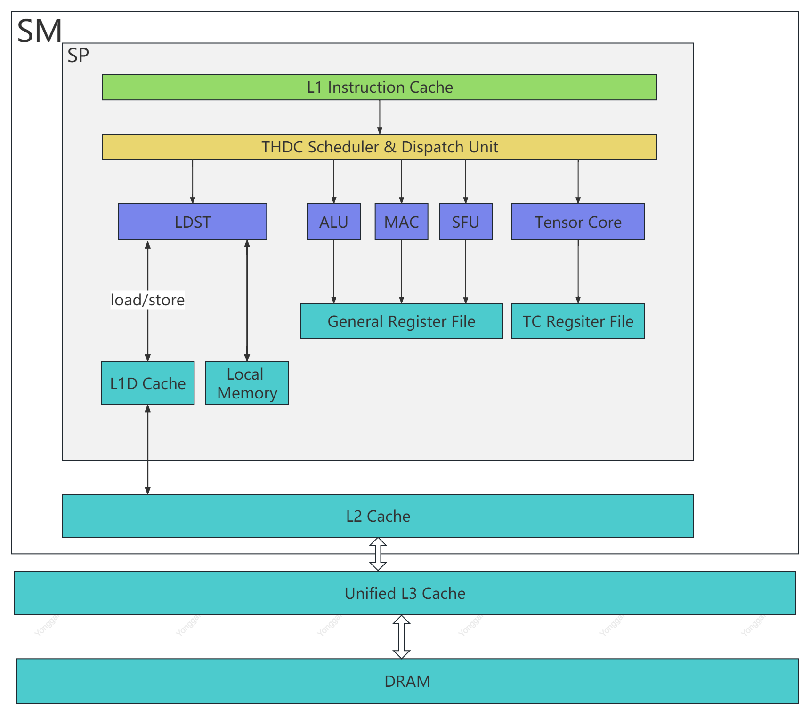
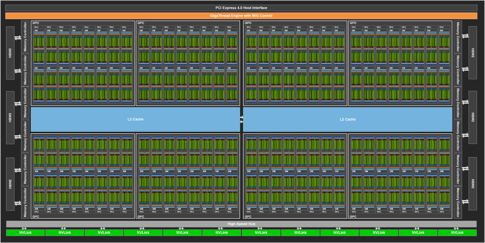
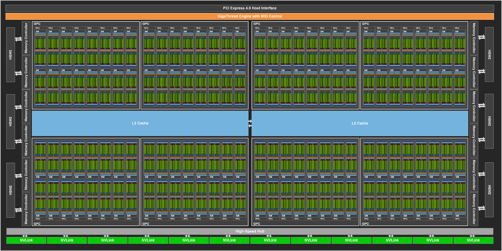

Architecture design and exploring for MVP v3.0 performance target
This article is used to depict how to get the target performance based on MVP architecture
Revision history
| Date | Version | Description | Author |
|---|---|---|---|
| 2023-06-28 | v1.0 | Initial | Liu Yonggang |
| 2023-07-04 | v1.1 | Thread/warp | Liu Yonggang |
Target Performance
10 TFLOPS
Total FLOPs per second = FLOPs per cycle per core * core count
Current MVP v2.1 Architecture Design
Architecture
There are 4 TPCs，each TPC has 2 SMs，and each SM has 4 SPs.
TPCs |
SMs |
SPs |
FP32 unit |
|---|---|---|---|
4 |
8 |
32 |
128 |
| PA | RAST | ROPs | TEXTs |
|---|---|---|---|
| 1 | 1 | 4 | 4 |

Each SP contains 4 INT32 units, 4 FP32 units, 4 LD/ST units, and 2 different SFU unit for different special function.

Performance
| Clock Speed | FP32 Unit | FP32 Computing power |
|---|---|---|
| 1.0 GHz | 128 | 256 GFLOPS |
FP32 Computing power = Clock x Amount of FP32 Unit x 2 (FMA) = 1.0G x 128 x 2 = 256 Gflops
Memory
Clock: 800 MHz DDR: 2 x 2 GByte DDR4 SRAM: 3 MByte PCIe: 3.0
- DDR4
DDR controller: 1 Clock: 800 MHz Data bus: 256 bit Latency: latency (ns) = clock cycle tim e (ns) x number of clock cycles Bandwidth = (800 MHz x 256 bits) / 8 = 25,600 MB/s or 25 GB/s or 6.25 Giga-FP32/s
Next Gen MVP v3.0 Architecture Design
Option 1
Major changes: Adding GPC and extending SP
There are 6 GPCs, each GPC has 8 TPCs，each TPC has 2 SMs, and each SM has 4 SPs
Each SP contains 16 INT32 unit, 16 FP32 unit, 16 LDST unit and 4 SFUs

Below shows the comparison of MVP v2.0 and MVP v3.0 from high level structure and performance
| GPC | TPC | SM | SP | FP32 unit | FP32 (tflops) | Speedup | |
|---|---|---|---|---|---|---|---|
| MVP v3.0 | 6 | 48 | 96 | 384 | 6144 | 12.288 | 48x |
| MVP v2.0 | 0 | 4 | 8 | 32 | 128 | 0.256 | - |

Below shows the memory related comparison in total
| Memory | MVP v2.0 | MVP v3.0 | Comments |
|---|---|---|---|
| Thread | 2048 | 98304 | TBD |
| Register file(KB) | 128 | 6144 | TBD |
| L1 Inst Cache(KB) | 288 | 13824 | TBD |
| L1 Data Cache(KB) | 64 | 3072 | TBD |
| Local memory(KB) | 1024 | 49152 | TBD |
| L2 Cache(KB) | 2048 | 98304 | TBD |
| DRAM | DDR4 | HBM2 | TBD |
| Memory Interface (bit) | 256 | 4096 | 16x256 DDR4 |
| Memory Data Rate (MHz) | 800 | 1000 | |
| Memory Bandwidth (GB/s) | 51.2 | 1024 | |
| Memory Size (GB) | 4 | 32 | 16x2 DDR4 |

SP Design
 

| 优点 | 缺点 | |
|---|---|---|
| SMT | ||
| SMT + SIMT | ||
| SMT + SIMT + SIMD | ||
| SIMT | ||
| SMT + SIMD |
SMT
保持当前的SMT设计，扩展为16个ALU/SP，即16个独立PC。
进行流水线的优化，添加ibuffer, operand_collector，支持2-issue，降低stall概率，提升并行性
SMT + SIMT/SIMD
保持当前SMT设计的基础上，每个PC对应支持4个ALU，即4个ALU共享同一个PC，该4个ALU按SIMT模式允许
在该设计下，保持了SMT的灵活性，同时增加了吞吐率，4 SMT X 4 SIMT = 16
SIMT
将当前的SMT模式改为SIMT模式，即每个SP只有一个PC，16个ALU共享同一个PC
PipeLine
FE阶段
Threads/warp vs Memory bandwidths
Assumption: 16 threads/warp, so if 16 threads with different address from the same warp, that means 16 x 32 bit = 512 bit. Because now bus bandwidth is 256 bit, so bus utilization is 100 %, but needs 2 cycles to finish data transaction at least.
Could bus bandwidth be improved to 512 bit?
Option 2
Major changes: Adding GPC and extending TPC
There are 20 GPCs, each GPU has 4 TPCs, each TPC has 4 SMs, and each SM has 4 SPs
SP has no change
| GPC | TPC | SM | SP | FP32 unit | FP32 (tflops) | Speedup | |
|---|---|---|---|---|---|---|---|
| v3.0 | 20 | 80 | 320 | 1280 | 5120 | 10.24 | 40x |
| v2.0 | 0 | 4 | 8 | 32 | 128 | 0.256 | - |
| Memory | MVP v2.0 | MVP v3.0 | Comments |
|---|---|---|---|
| Thread | 2048 | 81920 | |
| Register file(KB) | 128 | 5120 | |
| L1 Inst Cache(KB) | 288 | 11520 | |
| L1 Data Cache(KB) | 64 | 2560 | |
| Local memory(KB) | 1024 | 40960 | |
| L2 Cache(KB) | 2048 | 81920 | |
| DRAM | DDR4 | HBM2 |
Summary
| Solution | Clock | FP32 unit | FP32 (tflops) | Onchip Memory | Thread |
|---|---|---|---|---|---|
| Option 1 | 1.0GHz | 6144 | 12.288 | 170496 | 98304 |
| Option 2 | 1.0GHz | 5120 | 10.24 | 142080 | 81920 |
What simulator need to figure out
Register file size
L1 Instruction Cache size
L1 Data Cache size
Local memory size and if it is necessary
L2 Cache size
Evaluating L3 Cache which shared by all GPCs
Bus bandwidth
DRAM
The number of fixed pipeline
Area
Power
Conclusion
Option 1 is the better choice as the next generation MVP architecture
Open Issues
Dual issue: Simultaneous execution of FP32 and INT32 operations, fmac and mac instruction Current MAC in SP support floating-point and integer operations, this will limit multi-issue
L2 Cache shared by all SMs
Adding L3 Cache shared by all GPC instead of local memory
Async copy and barrier
Shared Cache Residency control
Reference
A100
Clock speed
CUDA core
FP32 (tflops)
A100
1410 MHz
6912(108x64)
19.5
GA100
1410 MHz
8192(128x64)
23.1
A100 FP32: 19.5 TFLOPS = 8192 x 2 x 1410 MHz
 



DDR
DDR4 Clock: 3200 MHz Bus Width: 64 bits Formula: Bandwidth = (Data Rate x Bus Width) / 8 Bandwidth = (3200 MHz x 64 bits) / 8 = 25,600 MB/s or 25 GB/s or 6.25 Giga-FP32/s
HBM
HBM2 Clock: 1.6 Gbps Bus width: 1024 bits Memory Channels: 8 Formula: Bandwidth = (Data Rate x Data Bus Width x Memory Channels) / 8 Bandwidth = (1.6 Gbps x 1024 bits x 8) / 8 = 204.8 GB/s or 51.2 Giga-FP32/s
Cache Mapping and Bandwidth Comparison
MVP
Ampere
MVP
Ampere
SP
L1 Inst/Data
L0 Inst
SM
L2
L1 Data/Shared
GPU
-
L2
5120 Bytes/clk[1]
DRAM
DDR4
HBM2